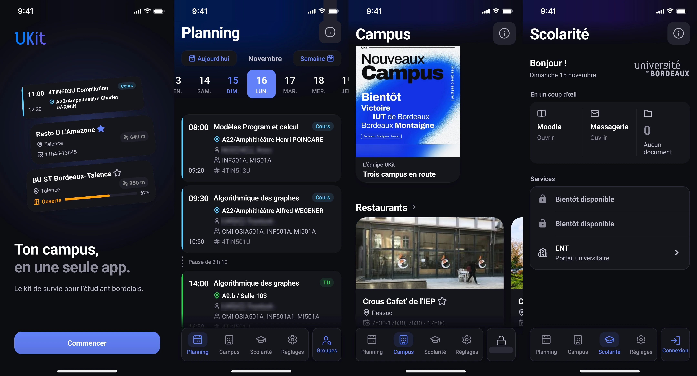

UKit

Your campus, in one app. The survival kit for students in Bordeaux.
Timetable
Every class of the week, readable offline
By day or by week
Campus
Canteens nearby, and when they open
Libraries, and how far they are
Studies
What is due on Moodle
University mail and documents
-
- Platforms
- iOS, Android
- Built with
- Expo, React Native
- Version
- 6.2
- Active users
- 2,100+